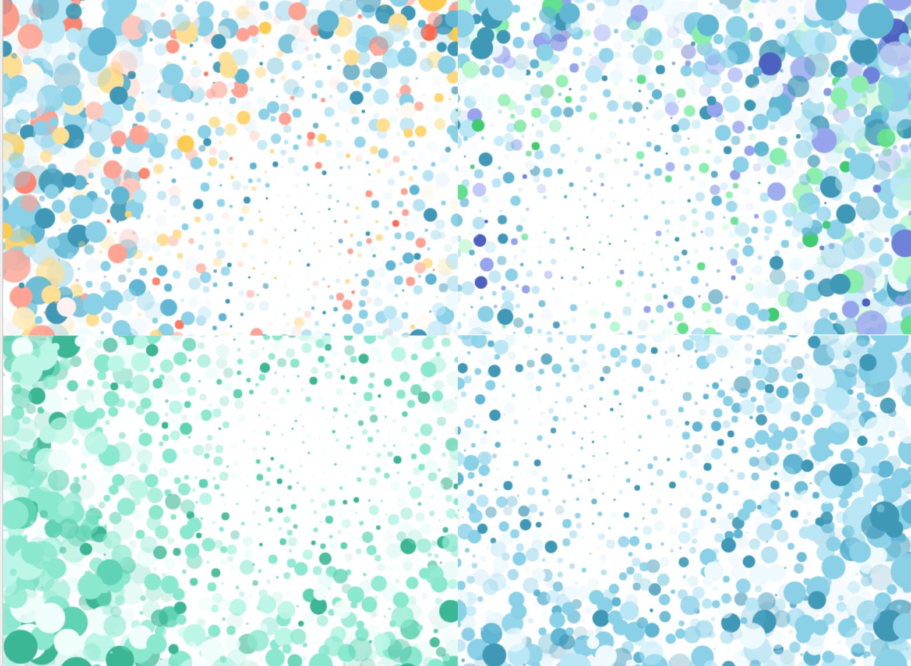

Akira
The process of designing the mobile app interface for an autonomous snow removal solution.
This is part of a larger project on designing a mobile app for an autonomous snow removal solution called Akira. If you're interested you can read more about the project and the process of developing personas for the system or the logo development.
Layout
The user research identified two key user groups: those who lack time but have ample ability and those who lack ability but have ample time. These user groups can be generaly translated to young to middle age homeowners who are busy and older homeowners who have limited physical ability.
With the large range of users, the layout and navigation for the system needs to be intuitive and easy to use. Becuase of this, I chose a top menu bar with a large workspace.
For the setup process, I chose to deviate from using the standard top left back button, in favour of having the next and back buttons placed on the right and left sides of the screen resectivley. This design provides consistency and follows a more traditional design pattern for setup wizards.
Navigation
The biggest concern for the system is that the user is able to easily navigate the system through the setup process and is able to easily locate various settings after the set-up is complete.
Set-Up Proces
The Akira system requires the user to complete the hardware setup prior to use. Because of this, it is important that the setup process is efficent and well laid out, such that the remains engaged and is not detered by the setup. To accomplish this, I chose to map out the set-up process in order to break the setup process down into clear chunks. The task breaks down into three key steps:
- Connecting the app
- Setting up the navigation system
- Setting up the doghouse
Each of these three steps have multiple substeps, which need to be further broken down into chunks. In the end, I chose to break up the connecting Akira steps into two, so that it is clear that the connection methods are different.
Menu Design
To design the menu, I completed a card sorting exercise with a number of users. These results were incorperated into the final menu hierarchy, shown in the refined design.
Wireframes
After deciding layout and the navigation, I developed a set of wireframes using Balsamiq. The wireframes focused on two key functions of the app:
- Completing the Akira set-up process
- Defining plow and pile regions on the user's property

User Testing
Cognitive walkthroughs and design walkthroughs were completed with the wireframes. Users were assigned one of the main user persons and asked to complete the Akira setup process, then redefine the plow and pile regions within the app. After the participant completed the tasks, they were askedto complete the System Usability Scale questionnaire. Major feedback on the app:
- Explain why I'm completing this step
- Make the progress bar more prominent
With each round of testing, the wireframes were improved upon. After three iterations, I chose to make a high-fidelity set of wireframes.
Styling
For the colours within the app, I chose to use blue as the base colour because it is a cool colour, which matches the feel of snow and ice. Using Paletton, a colour palette development tool, I developed an number of abstract mood boards, shown below and surveyed users to see which colour scheme was the most popular.

In the end, a monochromatic blue colour scheme was identified as the most popular colour scheme.

For fonts, I chose to use Avenir a sans-serif font that will work well with the monochromatic colour scheme. Because the goal of Akira is a set and forget snow removal solution with little interaction, the app should match visually match the minimalist design of the system.
Refined Design
Once I had a colour scheme and fonts in mind, I set to work creating the refined mockups in Sketch. For icons, I used a generic icon set. Flows of the app are on invision.
Results and Next Steps
When further rounds of testing were completed using the high-fidelity mockups, the results were encouraging. System Usabilty Scale grades went from a D for the overall, usable and learnable subscales to a B+ for the overall and useable grades and an A- for the learnable grades.
Next steps would include completing an inital round of development on the app to test interactions that are not suitably simulated using static images, such as the plow and pile definition functionality.